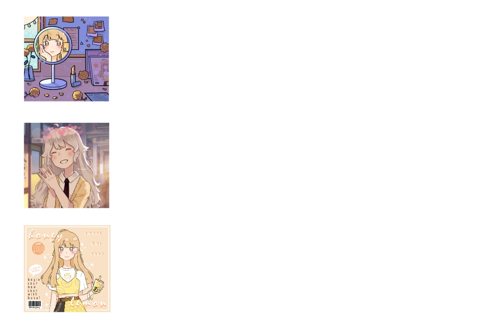

osu! is an exciting rhythm game developed primarily by Dean "peppy" Herbert. It includes gamemodes such as osu!standard, osu!taiko, osu!catch, and osu!mania.

PhantomShadowX: osu! is a really fun game! SnellyCS: my map just got ranked! TheFormalCow: my acc is bad Stumpts: i'm officially 7 digit! trackpad neeko: i play on a trackpad Stumpalope: congrats, stumpts!